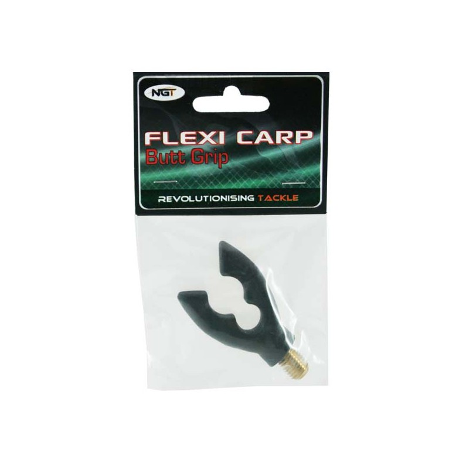

Meškėrės - Žūklės prekės - zuklys.lt | Žūklės reikmenys
 Katalogas Mano paskyra Prekių krepšelis Atsiskaitymas Prekių grąžinimas, garantija Prekių pristatymas Privatumo politika Apie įmonę Pristatymo kaina Sąlygos ir nuostatos Slapukai Susisiekite su mumis Svetainės žemėlapis Užsakymų istorija Naujienų prenumerata 0 prekė(s) - 0.00€ 0
Katalogas Mano paskyra Prekių krepšelis Atsiskaitymas Prekių grąžinimas, garantija Prekių pristatymas Privatumo politika Apie įmonę Pristatymo kaina Sąlygos ir nuostatos Slapukai Susisiekite su mumis Svetainės žemėlapis Užsakymų istorija Naujienų prenumerata 0 prekė(s) - 0.00€ 0
Jūsų prekių krepšelis tuščias
Pristatymo kaina Kontaktai Kaip pirkti
Kategorijos
Dovanų kuponas AKCIJOS ATPIGO NAUJIENOS Akiniai Aksesuarai Žvejybai Turizmui Meškerykočių suveržėjai ir apsaugos Replytės ir žnyplės Svarstyklės ir žuvies griebtuvai Tepalai, siliokonas ir chemija Žirklutės Rapala True Utility aksesuarai Akumuliatoriai Pakrovėjai Apranga APRANGOS IŠPARDAVIMAS Šortai Apatiniai Bliuzonai Kaukės, kepurės Kelnės Kojinės Kostiumai Kostiumai neskęstantys Liemenės Marškinėliai Pirštinės Rūbai nuo lietaus Striukės Avalynė Dry Walker Torvi Aku Aquaz Behr Chub Cormoran D.A.M FOX Imax Lemigo Norfin Prologic Pros Rocky Ron Thompson Savage Gear Scierra Vision Blizgės Abu Garcia Aisė Ali Crazy Fish D.A.M Hansen Kuusamo Lucky John Mepps Rapala Savage Gear Zumpė Kibs Boiliai ir priedai AikiBaits Carp Zoom CCmoore Cralusso Dynamite Baits Extra Carp Korda Shimano Mainline Dėklai 1 dalies 2 dalių 3 dalių 4 dalių Karpiniai Kieti dėklai Sietelių dėklai Dėklai ritėms Dėklai plūdėms Dėžės, rankinės Aksesuarų dėkliukai Dėkliukai pavadėliams, matavilai EVA Dėžutės, Rankinės EVA Dėžutės EVA Rankinės Rankinės Žvejybinės plastikinės dėžės Vaikiškos Akara Carp Zoom Cormoran Flambeau FOX Imax Meiho Salmo Savage Gear Sensas Vision Plano Jūrinės Šaltkrepšiai Downrigeriai Echolotai Deeper Humminbird Lowrance Raymarine Priedai Galvakabliai Graibštai Graibštai sulankstoma galva ir teleskopine rankena Graibštai su pilnai armuota galva Graibštų galvos Graibštų rankenos Karpiniai graibštai Vienrankiai graibštai Graibštų priedai, rem komplektai, plaukmenys Guminukai Crazy Fish Guminukai D.A.M Guminukai Fanatik Fox Guminukai Keitech guminukai Lucky John Guminukai Perchik Guminukai Pontoon 21 Guminukai Reins Guminukai Relax Savage Gear guminukai Storm Guminukai Uodo trūklio ir musės lervos Westin Gyvi masalai Įrangos vežimėliai Jaukai ir priedai Professional Extra Carp Carp Zoom Dynamite Baits Sensas Timar Mix Traper Priedai Trigger X Balzer Lietuviški priedai jaukams Jūrai Guminukai Pilkeriai Atora DAM Ron Thomson Savage Gear Sistemėlės Aksesuarai Ešeriniai kabliai sistemoms Kabliukai Kabliukai su pavadėliais Atora Cobra Drennan Fox Rage Gamakatsu Guru Kamatsu Lucky John Owner Dvišakiai Trišakiai Offset Kameros Karpiavimui FOX Sistemėlės ir jų elementai Svareliai Valai Kabliukai Aksesuarai PVA Korda Suktukai ir spynelės Sistemėlės ir jų elementai Saugi zona Valo skandikliai Aksesuarai Dirbtiniai masalai Svareliai PVA Kabliukai Valai Prologic Paruošti pavadėliai Sistemėlės ir jų elementai Kabliukai XC Valai Dirbtiniai masalai PVA Aksesuarai Svareliai Angliška PVA Carp Zoom Sistemėlės ir jų elementai Aksesuarai Kabliukai Žuvies laikymo ir svėrimo aksesuarai Daiwa ESP Extra Carp Gamakatsu Guru JRC Kryston MAD Aksesuarai MAD Kabliukai MAD Kabliukai su pavadėliais Sistemėlės ir jų elementai Spomb Strategy Sufix Pinti valai pavadėliams The House Carp VMC Kėdės, Gultai Priedai kėdėms Carp Zoom Chub D.A.M Elektrostatyk, Lenkija Feeder Competition Feeder Concept FOX JRC MAD Matrix Norfin Prologic Kėdės-kuprinės Kibimo indikator Elektroniniai Švytuoklės Kibirai ir jų priedai Kuprinės Liemenės Meškerės Spininginės Favorite Akara D.A.M Daiwa Fenwick G.Loomis Lucky John MADCAT - šamų žvejyba Major Craft NorStream Okuma Ron Thompson Salmo Savage Gear Spiningai - AKCIJINĖS KAINOS Shimano St.Croix Lamiglas Konger Plūdinės Akara Atora Favorite Mikado Okuma Ron Thompson Volzhanka Shimano D.A.M Salmo Larus Dugninės Atora Daiwa Feeder Concept Matrix Okuma Prologic Ron Thompson Volzhanka Shimano D.A.M Salmo Mikado Larus Karpinės Chub D.A.M Daiwa Fox JRC MAD Okuma Prologic Spomb Shimano Ron Thompson Salmo Mikado Larus Jūrinės Balzer Daiwa Okuma Ron Thompson Salmo Savage Gear Shimano WFT D.A.M Penn Muselinės D.A.M Ron Thompson Scierra Vision Salmo Velkiavimui Vaikiški komplektai Komplektai Dalys remontui Meškerykočių žiedeliai Stiklinės, anglinės, feeder galūnėlės Miegmaišiai Palapinės, skėčiai Pavadėliai Fluorokarboniai Plieniniai Titaniniai Volframiniai Pavadėliai su kabliais guminukų kaustymui Medžiagos gaminti pavadėlius Peiliai Balzer Imax MAM Marttiini Rapala Platformos Fox Matrix platformos ir jų priedai Jaxon Platformų priedai Traper platformų / kėdžių priedai ir aksesuarai Plūdės Cralusso Expert Salmo Shark Žiobrinės Prožektoriai Puodai, Kazanai Ričių remontas Ritės Spininginės ritės Abu Garcia Akara D.A.M Daiwa Favorite Lucky John Okuma Salmo Shimano TiCa Ryobi Multiplikator. Abu Garcia D.A.M Okuma Salmo TiCa Shimano Plūdinės Luxfish Okuma Robinson Salmo Dugninės, karpinės Twisted Line Akara Balzer Cormoran D.A.M Daiwa Feeder Competition Feeder Concept Fox Matrix Okuma TiCa Shimano Spro Salmo Jūrinės ritės Multiplikator DAM Okuma Shimano TiCa Penn Beinercinės Okuma Shimano Muselinės ritės Scierra Vision Okuma Inercinės Šamų žvejyba Šėryklės Metalinės Metodinės Plastikinės Sieteliai Sistemėlės Smulkmenos Kabliukų išėmėjai Masalo laikikliai ant kabliuko Stoperiai, silikoninės smulkmenos Suktukai, karabinai, žiedeliai Švieselės Staliukai Stovai ir jų priedai Laikikliai Smeigiami Pastatomi Stovų priedai, Buzz barai Sukriukės Blue Fox Abu Garcia Balzer D.A.M Lucky John Ron Thompson Savage Gear Mepps Master SP Svareliai Čeburaškos Drop Shot, Jig-Rig Jūriniai Volframiniai Veriami Su suktuku Užspaudžiami Tirolio lazdelės Termosai Arctix Arktika termosai Tonar Thermacell Valai Fluorokarboniniai PE valai Monofilamentiniai Pavadėliniai Pinti valai Museliniai valai Feeder Gum Valtys ir priedai ProMarine Ron Thompson Sėdynės ir jų priedai Elektriniai inkaro pakelėjai Priedai Varikliai Elektriniai Flover Minn Kota Promarine Benzininiai Priedai Propeleriai Vobleriai Akara Booyah D.A.M vobleriai DUO Jackall Jackall Timon Lucky John Owner Pontoon 21 - Gautas papildymas Salmo Savage Gear Vivingra Rapala Mega Strike Žieminė žvejyba Aksesuarai Stintinės sistemėlės Avižėlės Stintinės Švininės Velniukai Volframinės Palijoms Kuusamo avižėlės -40%! Vėgelinės Balansyrai, VIBai Akara Kuusamo Lucky John Progress Rapala Blizgutės Akara Balzer Blizgutės Lietuviškos Blue Fox Kuusamo Lucky John Dėžės ir dėžutės Dėžės Dėžutės Putplastinės dėžutės Grąžtai Jaukai Kabliukai Kėdutės Masalai Mešk. dėklai Paruoši velniukai Plūdės žieminės Ritės Sargeliai Sistemėlės palijoms Valai Fluorocarbon Monofilament Pinti Meškerytės Išparduotuvė nuo -30% iki -60% Karpiavimui išparduotuvė Spiningavimui išparduotuvė Jaukai, boiliai ir priedai išparduotuvė Aksesuarai, Ritės, Meškerės išparduotuvė Pagrindinis Meškerės
Meškerės
Spininginės Plūdinės Dugninės Karpinės Jūrinės Muselinės Velkiavimui Vaikiški komplektai Komplektai Dalys remontuiGeras žvejys neįsivaizduojamas be esminio atributo - tinkamos meškerės. Meškerių tipai ir kainų skirtumas gali svyruoti nuo pasirinkto žūklės tipo bei meškerės kokybės ir gamintojo. Kaip išsirinkti tinkamą meškerę? Patyręs žvejys jau puikiai žino, ko jis nori ir ko tikisi iš savo naujojo pirkinio, tačiau keblumų gali kilti pradedantiesiems žvejams, kurie dar nėra įvaldę ar susikūrę savo žvejybos technikos, nežino kokias žuvis ruošiasi gaudyti ir dar nėra apsisprendę dėl žūklės vandens telkinių. Pradedantiesiems žvejams reikėtų pirmiausia atsakyti į visus šiuos klausimus ir jau tuomet pradėti poreikius atitinkančios meškerės paieškas.
Kai jau žinote kokio tipo meškerės: spininginės, plūdinės, dugninės, karpinės, jūrinės ar muselinės reikia Jūsų puikiai žvejybai užtikrinti – rinkitės Žūklys.lt siūlomą asortimentą. Mūsų asortimente rasite išskirtinį asortimentą, kuriame siūlome tik jau gerai žinomų ir patikimų gamintojų gaminamas meškeres. Galėsite rinktis iš: „Favorite“, „Mikado“, „Shimano“, „Ron Thomson“, „Salmo“, „Okuma“, „Prologic, “Savage Gear“, „D.A.M.“ ir daugelio kitų žinomų gamintojų meškerių, kurios suteiks tik geriausią žvejybos kokybę ir leis mėgautis puikiu laimikiu kiekvieną kartą jomis bežvejojant!
Jei Jums visgi sunku savarankiškai išsirinkti reikiamą meškerę – kreipkitės į Žūklys.lt internetinės parduotuvės arba specializuotos parduotuvės konsultantus, kurie užtikrins, jog pasirinktos meškerės Jums tarnaus ilgai ir kokybiškai. Be to, galėsite sužinoti daugiau apie žvejybinius reikmenis ir išsirinkti labiausiai tinkamą amuniciją Jums!
Norint išsirinkti Jums tinkamiausią meškerę pirmiausia reikėtų žinoti, kuo skiriasi vienos ir kitos meškerių rūšys - tuomet galėsite deramai apsvarstyti kokio tipo meškerės Jus domintų labiausiai. Savo asortimente Jums siūlome: spiningines, plūdines, dugnines, karpines, jūrines bei muselines meškeres. Kuo jos skiriasi?
Spininginės meškerės
Šio tipo meškerės išsiskiria dėl savo meškerykočio, kuris yra puikiai pritaikytas plėšrioms žuvims gaudyti. Lyginant su plūdinėmis bei dugninėmis meškerėmis, spininginės meškerės yra trumpesnės, kas užtikrina geresnį meškerės valdymą ir patogumą žvejui. Šio tipo meškerės turi platų masalo užmetimo svorio diapozoną, kuris gali svyruoti nuo 2 g iki 300 g, be to, skiriasi ilgiu – nuo 180 cm iki 330 cm ilgio.
Plūdinės meškerės
Plūdinės meškerės pasižymi išskirtiniu lengvumu - žvejai dažniausiai šio tipo meškeres laiko rankose, todėl jos turi būti kuo labiau pritaikytos žvejo patogumui užtikrinti. Be to, ilgalaikis meškerės laikymas gali varginti rankos raumenis, taigi siekiama pasiūlyti kuo lengvesnę, tačiau patikimą meškerę.
Plūdinės meškerės skirstomos į „Match“, „Bolo“ bei „Pole“ tipus.
„Match“ tipo meškerės skirstomos į štekerines bei teleskopines. Šio tipo meškerių ilgis gali svyruoti nuo 3,30 m iki 5,10 m ilgio atsižvelgiant į žvejo poreikius.
„Bolo“ tipo meškerės – teleskopinės. Šio tipo meškerių ilgis gali svyruoti nuo 3,0 m iki 8,0 m. Dažniausiai, svorio diapazonas yra 5 - 35 g.
„Pole“ tipo meškerės, taip pat teleskopinės. Tokios meškerės neturi valo palaikymo žiedelių, o meškerių ilgis gali siekti net iki keliolikos metrų.
Dugninės meškerės
„Feeder“ tipo meškerės dažniausiai siekia 3,30 m - 4,20 m ilgį. Tokio tipo dugninė meškerė turi ne mažesnį kaip 90 g užmetimo svorį, kuris gali siekti net iki 180 g. Dugninės meškerės dažniausiai turi kelis, skirtingo kietumo keičiamus antgalius. Tokio tipo antgaliai suteikia galimybę stebėti žuvies kibimą be papildomos įrangos (pavyzdžiui – signalizatorių).
Dugninių meškerių tipui taip pat yra priskiriami „picker“ tipo meškerykočiai, kurių principas toks pats kaip „feeder“ tipo, tačiau „picker“ meškerykočiai yra trumpesni ir pasižymi mažesniu užmetimo svoriu (20 g – 60 g) bei 2,7m - 3,3 m ilgio.
„Kaprinių“ tipo Šio tipo meškerės yra kur kas sunkesnės ir mažiau lankstesnės. Tai žvejui itin padeda užkibus galingo dydžio žuviai, nes tvirta dugninė meškerė užtikrina, jog laimikį bus lengva suvaldyti ir ištraukti.
„Surf“ tipo meškerių ilgis gali siekti net 3,9 - 4,5m, nes yra skirtos žvejoti nuo jūros pakrantės. Žvejybos metu - metama labai toli, o svareliai gali siekti net iki 250g. „Surf“ tipo dugninės meškerės yra pritaikytos jūros pakrančių ir paplūdimio žvejybai.
Jūrinės meškerės
Šio tipo meškerės išsiskiria savo turima jėga, ilgiu ir atsparumu sūriam vandeniui. Jūrose dažniausiai žvejojama į pagalbą pasitelkiant sunkius masalus (150 – 1200 g) todėl meškerykotis turi būti ypatingai tvirtas. Dažnai jūrinėse meškerėse įtaisyti „Roler“ tipo žiedeliai, kurie užtikrina, jog valas ne slysta, o lengvai praslenka į pagalbą pasitelkiant besisukantį ritinėlį. Taip pat jūriniai meškerykočiai gali būti ir „Inline“ tipo, kai valas perveriamas ne per žiedelius pritvirtintus prie meškerykočio blanko, bet per blanko vidų.
„Surf“ tipo meškerės - turi tokius meškerykočius, kurie yra pritaikyti jūros pakrančių ir paplūdimio žvejybai. Šios jūrinės meškerės - labai galingos, o jų ilgis gali siekti net 3,9 - 4,5 m, nes yra skirtos žvejoti nuo jūros pakrantės. Žvejybos metu - metama labai toli, o svareliai gali siekti net iki 250g.
Muselinės meškerės
Jos idealiai pritaikytos žvejybai upėse. Šio tipo meškerėmis galėsite gaudyti upėtakius, kiršlius, šapalus bei kitas žuvis. Muselinės meškerės kardinaliai išsiskiria savo konstrukcija, o žvejybos principas skiriasi nuo kitų. Šios meškerės pasižymi ypatingu lankstumu. Pastebėtina, kad tokio tipo meškerės neturi nurodyto masalo užmetimo svorio, nes dažnai jis nesiekia net 1 g, taigi mėtymas yra atliekamas sunkaus valo pagalba.
Rekomenduojame
Favorite White Bird NEW 2021 Edition Spiningai Favorite Blue Bird 2020 EditionRekomenduojame
Echolotas Deeper Chirp+ Vasaros rinkinys Echolotas Deeper PRO , Deeper PRO+ GPS - VASAROS RINKINYS Svarelis Fanatik Tokyo-Rig Chupa Chups Guminukas Lucky John 3D Kubira Swim Shad Shimano Tribal TX-1 boiliai Lucky John Kibs Old Scale Cambri Photoluminescence Edition Jackall Timon Tricoroll 88MD-F ; 88MD-sInformacija
Negaunate mūsų laiško? Ričių remontas Prekių pristatymas Sandėlio išpardavimas Apie įmonę Pristatymo kaina Kaip pirkti Linkimo akcija Dynamite Baits-Žūklys Susisiekite su mumisPaskyra
Prisijungimas Registracija Pamiršau slaptažodį Mano paskyra Pageidavimų sąrašas Užsakymų istorija Naujienų prenumerataInformacija
Prekių grąžinimas, garantija Prekių pristatymas Privatumo politika Apie įmonę Pristatymo kaina Sąlygos ir nuostatos SlapukaiKlientų aptarnavimas
Susisiekite su mumis Grąžinimo forma Svetainės žemėlapisRekvizitai
Žūklys - UAB Vilmanda
V.Krėvės pr. 104J, LT-50381, Kaunas
g.page/Zuklys-lt
Įm.kodas : 135822490
PVM m/k: LT358224917
AB „Citadele“ bankas
LT637290000004402786
Swift kodas : INDULT2X
info@zuklys.lt ; zuklys@zuklys.lt
+370 601 50655 ; +370 671 87081
Mano paskyra
Mano paskyra Užsakymų istorija Pageidavimų sąrašas Naujienų prenumerata Žūklys - UAB Vilmanda © 2007 - 2020Informuojame, kad šioje svetainėje naudojami slapukai (angl. cookies). Sutikdami, paspauskite mygtuką „Sutinku“ arba naršykite toliau. Savo duotą sutikimą bet kada galėsite atšaukti pakeisdami savo interneto naršyklės nustatymus ir ištrindami įrašytus slapukus. Daugiau informacijos
Gerai